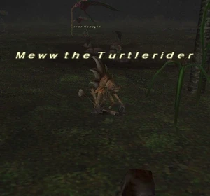

Level 75 reference · Zenith rules
|
Job: White Mage Notorious Monster |
 |

|
Zone |
Level |
Drops |
Steal |
Spawns |
Notes |
|
47 |
1 |
A, L | |||
|
HP = Detects Low HP; M = Detects Magic; Sc = Follows by Scent; T(S) = True-sight; T(H) = True-hearing JA = Detects job abilities; WS = Detects weaponskills; Z(D) = Asleep in Daytime; Z(N) = Asleep at Nighttime | |||||
Notes:
- Spawns around F-11 to G-11, in front of the pond by the caves leading to Sea Serpent Grotto, approximately every 21 hours.
- Around 4500HP
- Killable by: Solo at level 65
- Special Attacks: Benediction, Auto Regen (moderate); casts Cure IV, Curaga II, Banish II, Silence, Dia II, Shell II, Stoneskin, Flash
- Can spawn with significant damage reduction from physical and magical attacks
Adapted from Eden Wiki: Meww the Turtlerider · Contributors and history · CC BY-SA 4.0. Revision 44684. Layout, links and optional background text adapted for Zenith.